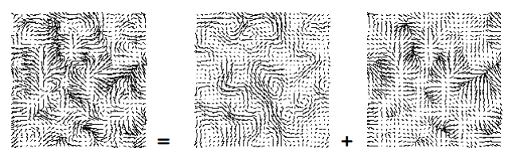

Since accurate fluid simulation is complex to compute, it is difficult to include such a simulation in a real-time environment. When using fluid simulation for visual effects, this can take hours of time to render frame. I was interested in fluid solvers that approximate values for the Navier Stokes equations while remaining believable to the viewer. Fluid solvers that are able to reduce the time needed to compute approximations to fractions of a second can allow for real-time viewing of the fluid as it moves. This also opens the simulation up to interaction with the user. In this project, a grid based fluid solver algorithm created by Jos Stam was implemented. The algorithm allows for real-time computation of fluid movement in an environment. To showcase this, various user interactions through the mouse were added to the project. Finally, two methods of viewing the fluid density through RGB alpha values and hue values for HSV.
For a fluid to be believable in real-time, it must make an approximation of the Navier Stokes equations. The Navier Stokes equations are complex and are not computable in real-time for a grid large enough to show significant changes. As a result, a fluid solver algorithm that approximates the values of the fluid densities in a grid is necessary. These algorithms are capable of approximating a value that Navier Stokes would produce to an accuracy that would be visually believable. They are also capable of simulate a change in time in fractions of a second, meaning that the possibility for real-time visualization of a flow is possible. The specific algorithm implemented in this project is one presented by Jos Stam in the research paper titled "Real-Time Fluid Dynamics for Games". The algorithm in this project performs many of the same steps as the Navier Stokes equations, but approximates the values at each step.
To solve changes in density, the first step is to add all densities that are provided by that frames user input. Externally from this system there is a system that takes in user input at each frame in the Unity engine and adds it to the previous frame's density grid to obtain the one for computation in this step. This system is simple when implemented in Unity and consists of checks for mouse positions and key presses followed by modification of the density field. Next, the density present in the environment undergoes diffusion. When the diffusion setting in the project is greater than 0, the fluid should diffuse into the environment regardless of the presence of velocity. To accomplish this, diffusion at each location in the grid involves the neighbors of said location. The value of the density in each cell in the previous step can be modeled with the following equation.
dens_prev[i, j] = dens[i, j] - a * (dens[i - 1, j] + dens[i + 1, j] + dens[i, j - 1] + dens[i, j + 1] - 4 * dens[i, j])
Where a is dependent on the change in time and diffusion value. This takes place over each grid cell in the entire grid, performing diffusion on the fluid. Solving this linear system for the current density value is approximated using the Gauss-Seidel method to shorten computation time. Following this is the "advection" step. The advection step involves calculating changes in density as a result of the velocity field in the environment. To accomplish this, a particle is placed at the center of each grid location. It is then passed backwards through the velocity field to find where it would have been in the previous time step. Following this, density is moved from that grid location to the new location.
Velocity in a fluid changes due to three major reasons: addition of forces, the fluid's viscosity, and advection. Advection of the velocity field is performed with its previous state. After this, the velocity is briefly diffused in the same manner as the density had been earlier. This is because as density diffuses so too must some velocity to follow it. Finally, projection occurs on the velocity field to give it the property of being mass conserving. Essentially, the algorithm focuses on the concept that a velocity field after a time step is made up of a mass conserving field and a gradient field. When the gradient field is subtracted from the velocity field, the mass conserved version is obtained. To do this, Gauss-Seidel is once again used in the approximation for a Poisson equation representing the gradient field. This is shown in an image below taken from Stam's research paper, which shows how the velocity field is equal to the addition of the mass conserving field with the gradient field.

After the implementation of the algorithm, I attempted to incorporate features that allowed for user interactivity and would also add to the fluid solver. The first of these features is an implementation of internal boundaries, such as walls that would prevent the flow of density. To accomplish this, the boundaries are designed to be more than a single grid cell thick, as less would lead to potential leakage across the barrier. At the edges of each boundary, the velocity is made to be in the opposition direction of the cell touching it. As a result, any density entering the boundary will be reflected back out into the environment. To show users how boundaries affect the fluid, I implemented the ability for users to click the left button on the mouse to create boundaries dynamically in the environment that the fluid will now react to.
In order for the user to see how the addition of density changes the overall flow, the mouse position is used to modify the flow of density. The first setting in the project for this is a fixed point in the center of the environment that constantly sends fluid out into the environment, with the velocity of said density being in the direction of the mouse pointer. The second setting creates fluid as the user moves the mouse. This gives the user an opportunity to add additional density in locations of their choosing so that they may experience the effects. The third setting allows for the user to queue up densities at positions with velocities in the direction specified by the user using WASD on the keyboard.
Finally, two different graphical settings were created to visualize the simulation, with each one choosing visuals to display at each grid cell based on the density at said cell. The first setting is RGB white, with the alpha value at each cell being directly proportional to the density. The second setting is a HSV color with maximum saturation and brightness, with the hue being directly proportional to the density. Many videos of the first setting and a video of the second one are present in the results section.
The main lesson that was learned from this project was that quality approximation is key to real-time simulation. Each solver that I researched before deciding on the one created by Jos Stam involved taking the Navier Stokes equations and attempting to simplify the computational complexity behind them. I had never worked with fluid simulation before, and as a result learned how to treat the density for each cell as heavily dependent on its neighbors.
The first video of the results is embedded below. For this video, the user is allowed to move the mouse pointer to change the direction of a fixed density flow in the center. The video shows how as more density is introduced it gradually diffuses throughout the environment. Notice how at the edge of the environment are defined boundaries that prevent density from escaping the enclosed environment.
This video shows how the user is able to modify the method through which they introduce fluid to the environment. This setting involves adding density to the environment at the location of the mouse and adding velocity based on the direction of the mouse relative to its previous position.
This video shows how the user can drag their mouse to create boundaries in the environment. They can then simulate fluid flow and watch as fluid is blocked by the added boundary. Curved boundaries allow for the curving of the flow with flat ones tend to diffuse the flow along the wall.
This video shows how the final method by which the user may add density to the environment. Four densities are added to the queue with velocities that point to the center of the environment. The densities are then set free in the simulation and allowed to collide with each other to produce an interesting effect.
This video combines multiple methods of user input with different shapes for internal boundaries. Notice how each added density ends up interacting with the others, and how the different shapes of the boundaries affect the flow there.
In this video, the graphical method dependent on HSV colors is shown. Prior to this video, all previous result videos used RGB white with alpha values dependent on the density. Here, the hue is dependent on the density, which can be seen as fluid is added to the environment.
This final video shows how the fluid movement is modified when the viscosity of the simulated fluid is changed. When viscosity is increased to a value of 0.05 from zero viscosity, the each cell of the velocity field tends to point in the same general direction. As a result, the fluid density is shown to attract to itself as it moves through the environment.